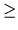

The famous Ghost Busters team has decided to upgrade their Ectomobile (aka Ecto-1) with a powerful proton gun and an advanced targeting system. Egon has designed and built all the hardware which consists of ectoplasmic scanner and a proton gun that has two degrees of freedom and can automatically rotate and fire in a 90 degrees trihedral angle. You have been hired to write a prototype for the targeting software.
Ghosts are detected by ectoplasmic scanner and are represented as
floating spheres. The coordinates of their centers and radii are
delivered from the ectoplasmic scanner to the targeting software. The
coordinate system is aligned is such a way, that the proton gun fires
from the point (0, 0, 0) anywhere into
X 0, Y 0, Z 0
trihedral angle. The gun fires a proton ray in a straight line
and is so powerful, that even a touch of its ray is enough to kill
a ghost. The ray of the proton gun is able to kill a virtually unlimited
number of ghosts on its way.
For the first prototype for the targeting software, you are asked to
write a program that determines the maximal number of ghosts that can
be killed with a single shot of the proton gun.
The input begins with a single positive integer on a line by itself indicating the number of the cases following, each of them as described below. This line is followed by a blank line, and there is also a blank line between two consecutive inputs.
On the first line of the input file there is a single integer number
N (
0 N
N 100) - the number of ghosts detected by the ectoplasmic
scanner of Ecto-1. The following N lines describe detected ghosts - one
ghost per line. The description of i-th ghost (ghosts are
numbered from 1 to N) consists of 4 integer numbers Xi,
Yi, Zi, and Ri, separated by spaces.
Xi, Yi, Zi (
1
100) - the number of ghosts detected by the ectoplasmic
scanner of Ecto-1. The following N lines describe detected ghosts - one
ghost per line. The description of i-th ghost (ghosts are
numbered from 1 to N) consists of 4 integer numbers Xi,
Yi, Zi, and Ri, separated by spaces.
Xi, Yi, Zi (
1 Xi, Yi, Zi
Xi, Yi, Zi 10000)
are the coordinates of the ghost's center, and Ri
(
1
10000)
are the coordinates of the ghost's center, and Ri
(
1 Ri
Ri min(Xi, Yi, Zi)) is the ghost's radius.
Because ghosts are ectoplasmic, they can be arbitrarily placed in respect
to each others. They can intersect, fit inside each other, coincide with each
other, etc.
min(Xi, Yi, Zi)) is the ghost's radius.
Because ghosts are ectoplasmic, they can be arbitrarily placed in respect
to each others. They can intersect, fit inside each other, coincide with each
other, etc.
For each test case, the output must follow the description below. The outputs of two consecutive cases will be separated by a blank line.
On the first line of the output file write a single integer number - the maximal number of ghosts that can be killed with a single shot of the proton gun. On the second line of the output file write the identifying numbers of the ghosts to be killed in an arbitrary order separated by spaces. If there are multiple ways to kill this number of ghosts then write any one.
2 2 1200 1200 3900 300 160 160 820 60 13 1200 1200 3900 300 160 160 820 60 100 10 10 10 10 100 10 10 10 10 100 10 10 10 10 10 50 50 50 10 100 100 75 20 100 75 100 20 75 100 100 20 3000 4000 7000 2600 100 1000 1000 50 1000 100 1000 100
2 1 2 5 6 7 9 10 11
Notes: